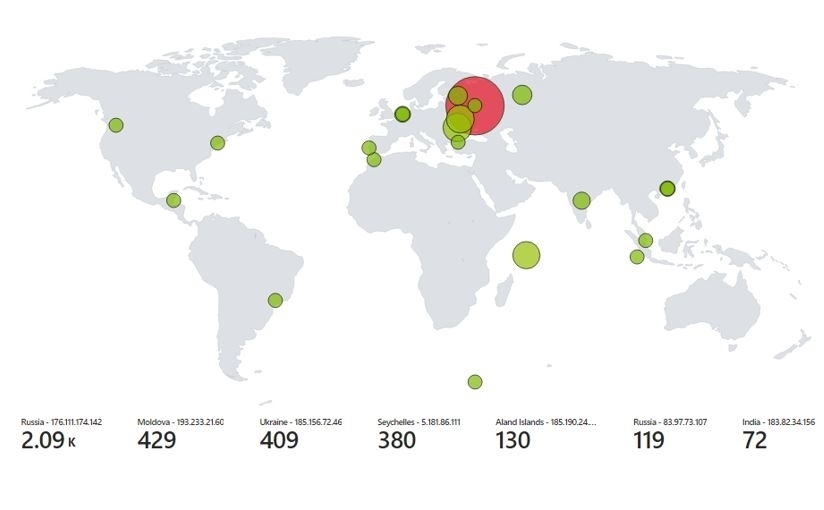

Azure Sentinel Map
With Live Cyber Attacks
In this project, I learned how to use Azure, created a PowerShell Script, Developed a KQL Query and made fun of hackers displayed on my Map
Introduction
The Honeypot Cybersecurity Visualization project is an innovative approach to understanding and visualizing cyber threats by leveraging the power of Azure cloud services. This project aims to create a virtual machine honeypot in Azure, which will be exposed to the internet, intentionally making it an attractive target for hackers. By monitoring and analyzing their activities, the project seeks to gain insights into cyber threats and their geographical origins.
Honeypot Diagram
The project begins by setting up a virtual machine in Azure and configuring it as a honeypot. All ports of the virtual machine are opened to the internet, allowing hackers to easily find and attempt to compromise the machine. The firewall is deliberately disabled to ensure that hackers are not blocked by it, thus maximizing their attempts.IP Geolocation
When a hacker attempts to gain unauthorized access to the honeypot through a failed RDP connection, an error is logged in the Event Viewer of the virtual machine. This action triggers an automated PowerShell script, which extracts the IP address of the attacker from the Event Viewer logs. To determine the real geolocation of the attacker, a third-party API is utilized. The IP address is sent to the API, which returns the latitude, longitude, country, and state information of the attacker.KQL-Azure Query
The gathered geolocation data, including latitude, longitude, country, and state, is then saved to a file for further processing. Returning to Azure, a Query based on KQL (Azure Query Language) is created to process the information in the file. This query filters and organizes the data, extracting only the necessary details for visualization.World Map
Once the query is executed, the project generates a world map that visually represents the geographical locations of hackers attempting to brute force the honeypot. Each hacker's location is pinpointed on the map using their latitude and longitude coordinates, and additional information such as country/state is displayed. This interactive map provides a global view of cyber threats, enabling better understanding and analysis of the geographic distribution of attacks.